1
Read the counters
The ring shows Right now. The tiles count Checked in, On break, Late, Absent, On leave and Geofence flags.
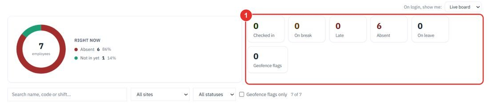
See who is in, on break, late or absent right now, then read the month for payroll: days present, hours, late marks, leave and overtime. Each step shows the exact button to click.
Do this during the day. Open app.bpmsquare.com/wfm/live-board. It shows who is in, on break, out, late or absent, per site, and refreshes by itself.
The ring shows Right now. The tiles count Checked in, On break, Late, Absent, On leave and Geofence flags.

Use the All sites list to look at one location. No site assigned lists people without a home site.
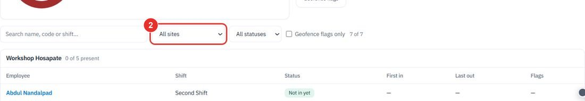
In, On break, On leave, Absent, Checked out or Not in yet.
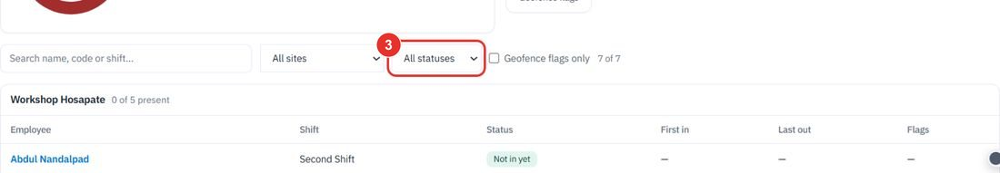
It keeps only the rows that carry a geofence flag.
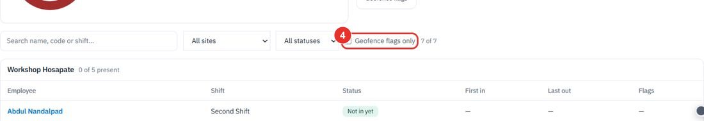
The tables below list Employee, Shift, Status, First in, Last out and Flags for each person.
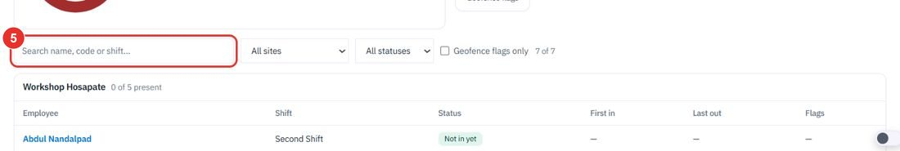
The On login, show me list has two choices: Live board and Dashboard.
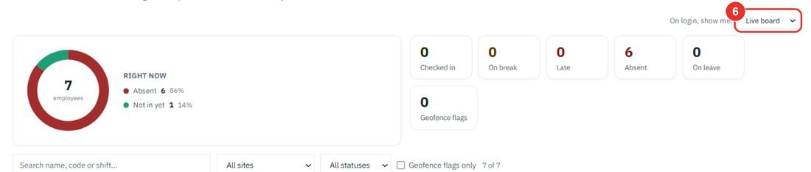
Do this at month end. Open app.bpmsquare.com/wfm/summary (Time Summary). It gives per-employee attendance for the CA: days present, hours, late marks, leave, holidays and night-shift allowance.
The Monthly summary tab is open first. The month starts on the current one.
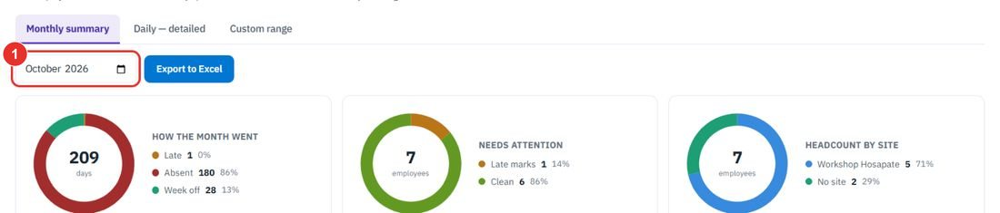
How the month went counts days late, absent or on week off. Needs attention counts people with late marks. Headcount by site splits people by site.
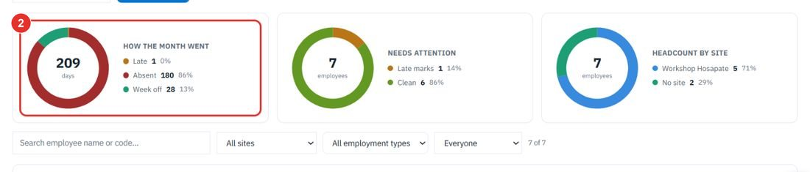
Type a name or code.
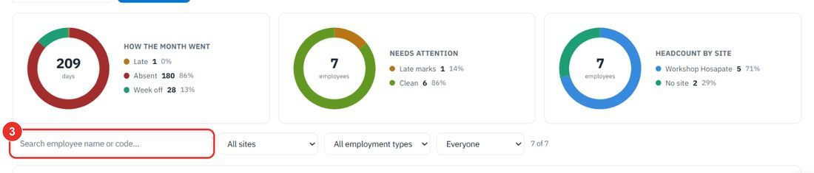
Use All sites to look at one location. The next list filters by All employment types: Full-time or Contractor.
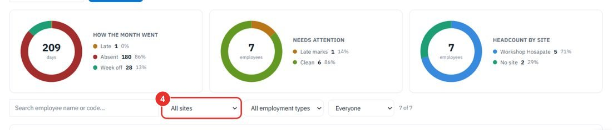
The last list holds Everyone, Late marks, Incomplete days, Unpaid leave and Clean.
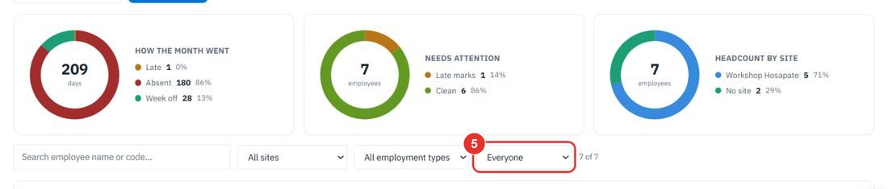
It downloads the month as an Excel file. The table has columns Days present, Absent, Hours, Late marks, Paid leave, Unpaid leave, Holidays, Night shifts, OT hrs and Incomplete. This guide does not click it.
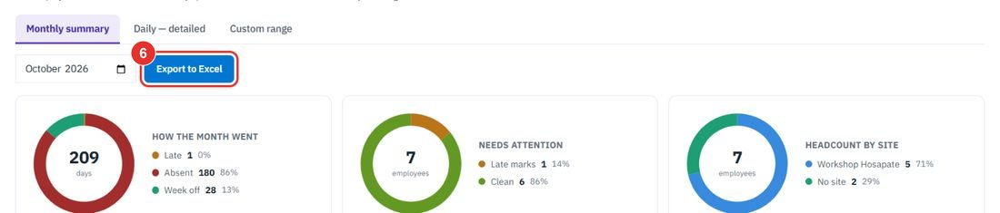
Do this when the month is too wide, or when you need to see every punch.
The rings and filters stay. Below them, each person is a row you can open.
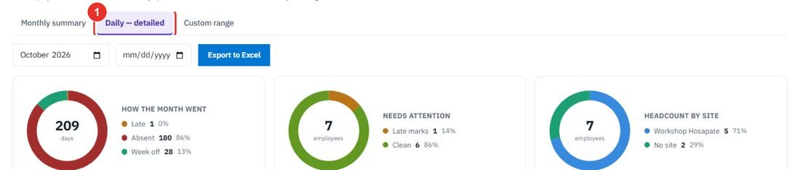
The date field next to the month is for picking a day.
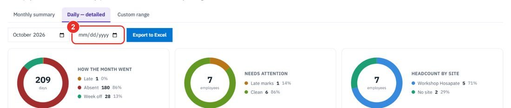
It opens a table with every day: Date, In, Out, Breaks taken, Break total, Gross, Total worked and Status. Total worked is check-out minus check-in minus breaks.
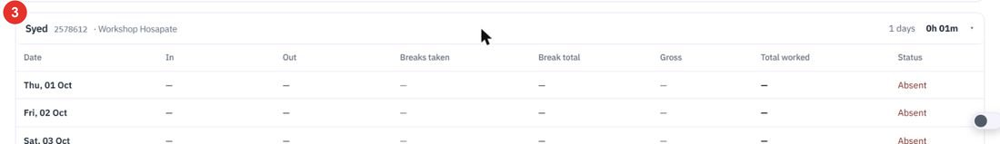
Use it for a period that is not a calendar month.
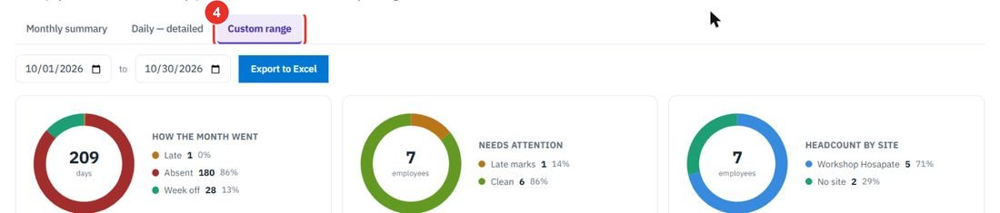
Type the first and last day. This screen shows the summary table only. For the day-by-day breakdown of the range, use Export to Excel.
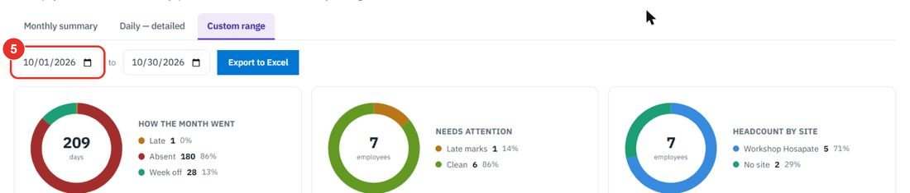
Twenty minutes on a live workspace, with your files and your team.